Press kit
 Tin Coffins
Tin Coffins
A cel-shaded mech roguelite shooter. You are Talon-22, a combat clone printed this shift, and twenty-one of you didn’t come home.
- Steam · December 2026
- US$9.99
- Free demo out now
- Windows · macOS · Linux
- 1–4 players
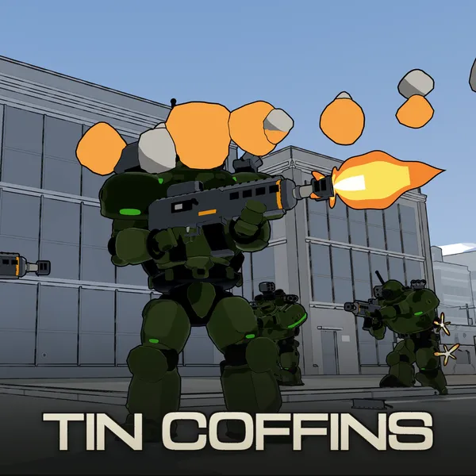
- Developer
- Nathaniel Voorhies, working as Hexmonger (solo developer)
- Publisher
- Hexmonger (self-published)
- Release
- December 2026 on Steam
Free demo on Steam now - Price
- US$9.99
- Platforms
- Windows, macOS and Linux (Steam)
- Genre
- Third-person mech roguelite shooter
- Players
- Single-player campaign; online co-op for up to four (Steam, or LAN)
- Input
- Controller (full support, adjustable aim assist), or keyboard and mouse
- Languages
- English (interface, voice and subtitles); Japanese, Simplified and Traditional Chinese, Korean, Russian, Ukrainian, Polish, Spanish and Brazilian Portuguese (interface and subtitles)
- Engine
- Godot 4.6
- Steam
- store.steampowered.com/app/4943260
- Website
- hexmonger.com/tin-coffins
- Press contact
- press@hexmonger.com
About the game
In one sentence
Tin Coffins is a cel-shaded third-person mech roguelite shooter in which a cloned pilot fights short, lethal squad battles through procedurally generated cities, and each death hands the controls to the next clone.
Short description (about 60 words)
You are Talon-22, a combat clone printed this shift, and twenty-one of you didn’t come home. A cel-shaded mech roguelite shooter: short, lethal squad battles through procedurally generated war-torn cities, against enemy squads that flank, suppress and hold the line. Die, and the next you deploys. Up to four pilots can fly together in co-op.
Long description
WAKE PROTOCOL: LINE TALON, ITERATION 22. ENGRAM RESTORE: COMPLETE. TERMINAL TRIM: 00:01:28. GOOD MORNING, TALON.
You are a combat clone, the twenty-second of the Talon line, piloting a humanoid mech at infantry scale through short, lethal missions in war-torn cities, with your squad at your back. When you die, the war doesn’t rewind. The front line keeps what you won and lost, the casualty board takes your name, and the next iteration of you wakes up to keep fighting.
This is not a game about being a god in a giant robot. You are a soldier in an armored suit. Cover, sightlines and reload windows decide fights, and mechs die in seconds under sustained fire, you included. Lose an arm, even your head, and keep fighting. Only your hit points decide when you go down.
The enemy fights as squads. Each one has a commander handing out roles (anchor, flank, suppress, overwatch, retreat) to pilots who decide for themselves when to peek, push, reload and fall back. They see you by line of sight and hunt where they last saw you; pop smoke and they lose you. Your own four wingmates take orders over a comms radial and answer on the radio, and when that isn’t enough you can call the support you signed out before the drop.
A run is four sorties on one life, with no respawns. The salvage you bank buys frames and weapons that outlast you, and every sortie moves a front line across three theaters of war. Complete the cycle and you retire to the colonies. That’s the deal. But the iterations before you learned to leave messages where the scrub can’t reach, and the messages in your journal are from you.
You don’t have to fly alone. Outside the campaign, up to four pilots can fly sorties together in online co-op, with AI pilots in any empty seat. Invite friends through Steam, share a squad code, or press RANDOM SQUAD to join strangers, and talk over push-to-talk voice chat. The free demo has co-op too.
Features
- A soldier in a suit, not a god. Lethal, cover-based fights in which positioning beats reflexes. Friendly fire is real for everyone, and your wingmates check their line of fire before they shoot.
- Four-player co-op. Two to four pilots fly sorties together outside the campaign, with AI flying any empty seat. Join through a Steam invite, a squad code or RANDOM SQUAD, talk over push-to-talk voice chat, or play over LAN. The free demo has it too.
- Enemies that fight as squads. Commanders assign roles, and pilots peek, suppress, take cover and fall back on their own. Rookies lose their nerve under fire and drop off comms; veterans hold the order.
- Command your squad. Four wingmates, more on the big operations. Tag, flank left or right, overwatch, follow or disengage, and call in an artillery barrage, a lance of reinforcements or a block on enemy landings.
- Three frames. Light, medium and heavy, each with its own way out of trouble: the light’s boost-dash and jump pack, the medium’s dive-roll, the heavy’s thruster lurch and braced stance. Nine weapons, from autocannons and a marksman rifle to guided missiles, siege rockets and smoke walls.
- Limbs come off. Arms and the head can be shot off and the pilot fights on; only hit points decide a death. A paper-doll HUD shows where every hit landed.
- A war that keeps score. Five mission types (purge, sabotage, extraction, seize and defense) and multi-stage operations that chain them. Each one is fought in its own procedurally generated city, by day, at dusk, at night or under a toxic haze, with dropship insertions, reinforcement drops and a siege tank that has to be taken from behind.
- Tactical Replay. After a sortie, scrub through the fight and see what each enemy pilot knew about you against where you really were, and what their commander ordered.
- Echoes. Dead drops left where earlier clones fell, and transmissions on a channel Command doesn’t log, signed by earlier Talons.
- No account, no telemetry. The campaign plays fully offline. Fourteen achievements, ten languages, colorblind modes, subtitles, and a scalable UI and HUD.
Trailer
77 seconds, cut from real play. Watch it on YouTube to embed or share it. For the 1080p60 master, email press@hexmonger.com.
Uncut gameplay
Whole sorties from the drop to the extraction or the death, recorded from play with OBS at 1080p60, with the HUD and the game's own audio, and no cuts, cards or commentary. Unlisted on YouTube; email for the original files to cut into your own video.
- By day: the drop, take the overlook, kill the siege tank, run for the extraction point
- At dusk: the drop and a push on a strongpoint, until the pilot is killed
- Secure the forward block, then drop the relay tower; the pilot is killed
- The light frame: jump pack and boost-dash over the rooftops, until the pilot is killed
Screenshots
1920×1080 PNG, captured from the running game with its HUD, and the same seven pictures as the Steam page. No watermarks or logos: crop them freely. 日本語 is the same moment with the game set to Japanese.

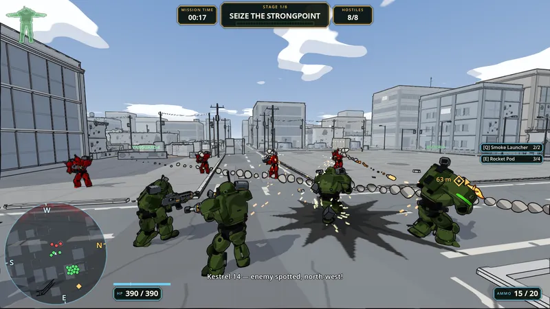


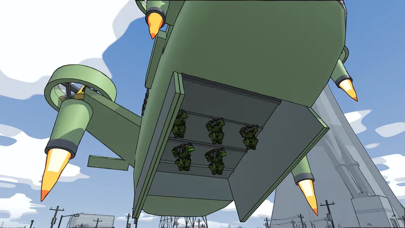

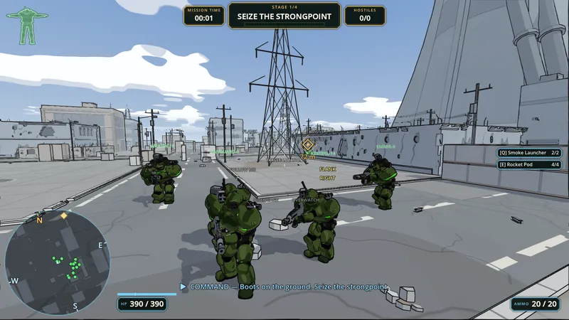


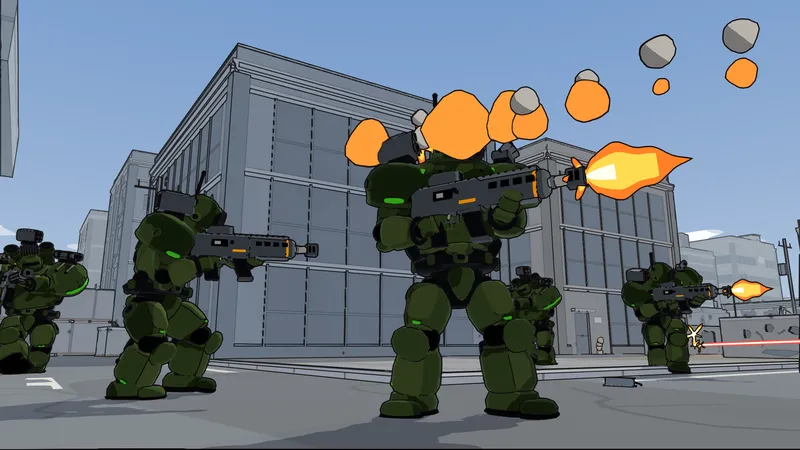

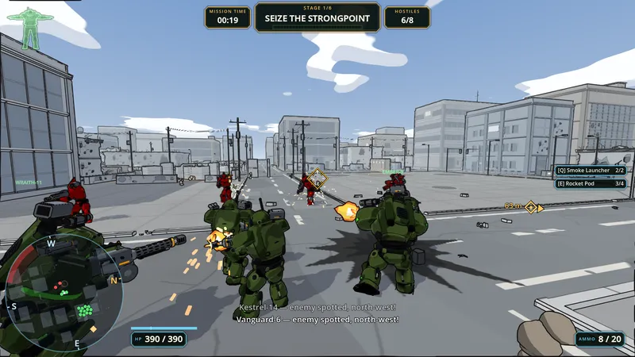


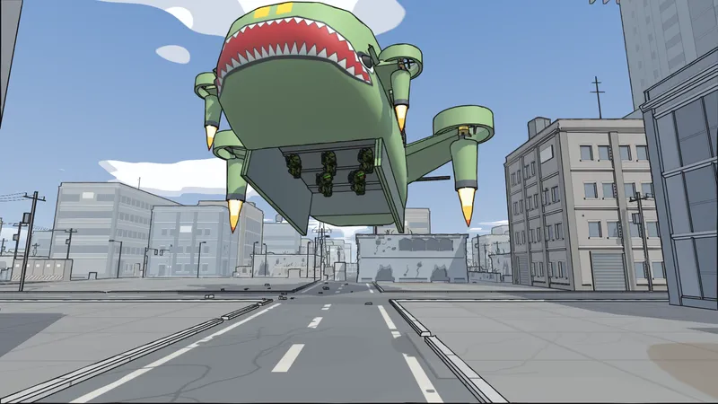

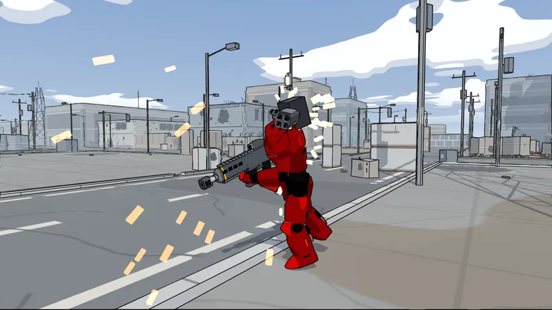
4K stills, no HUD
The frames the key art and the Steam capsules are cut from, at 3840×2160 with the HUD hidden, as JPEG at quality 95.


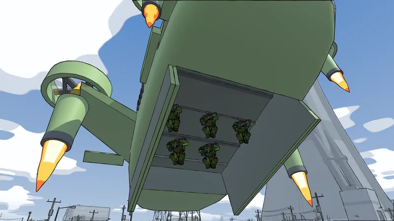

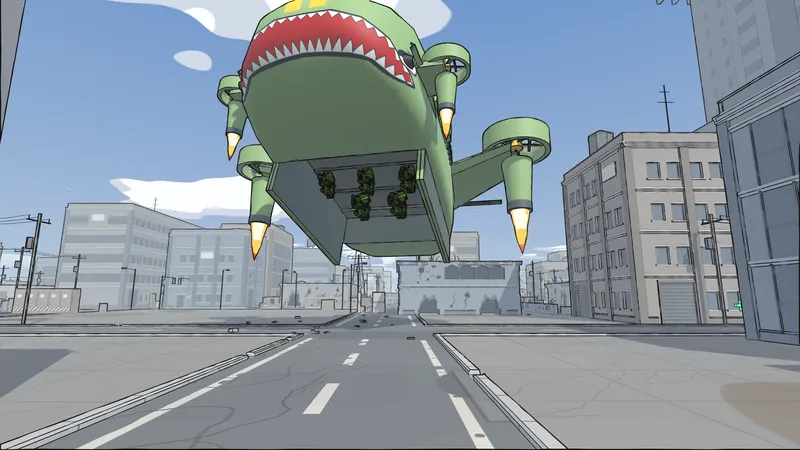

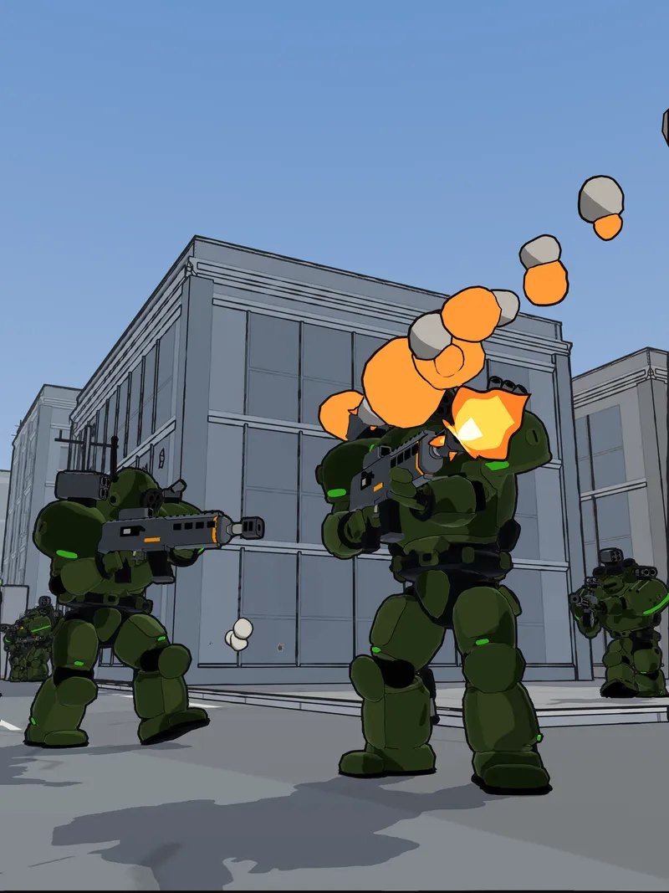
Logo, icon and key art
The logos and icon are transparent PNG. The key art and capsules are in-game frames with the logotype laid on them; the large ones are JPEG at quality 95.


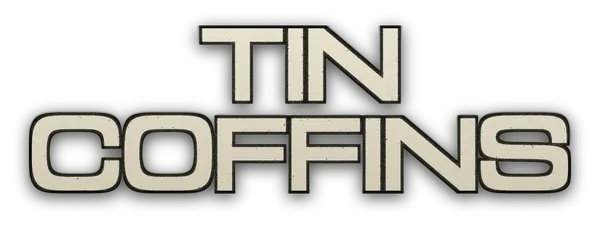

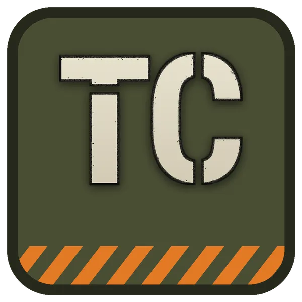

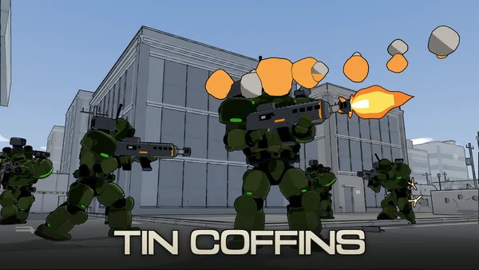


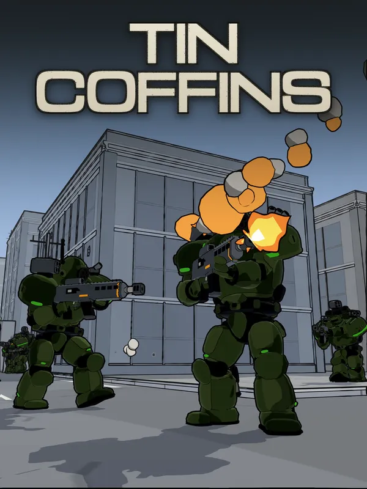

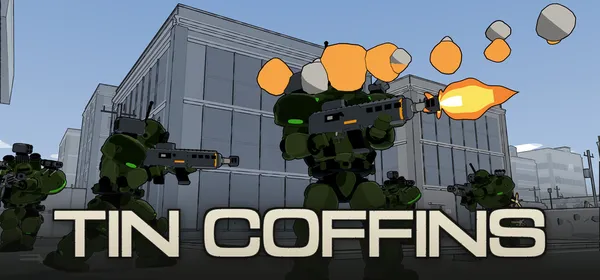

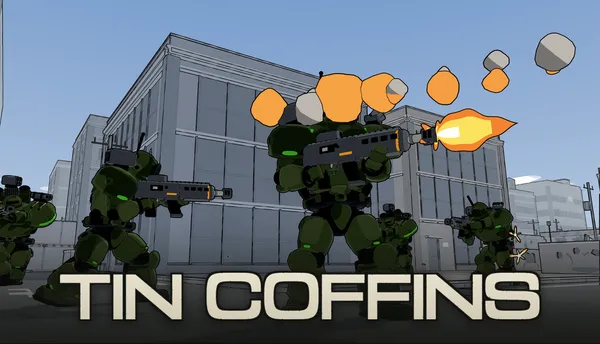

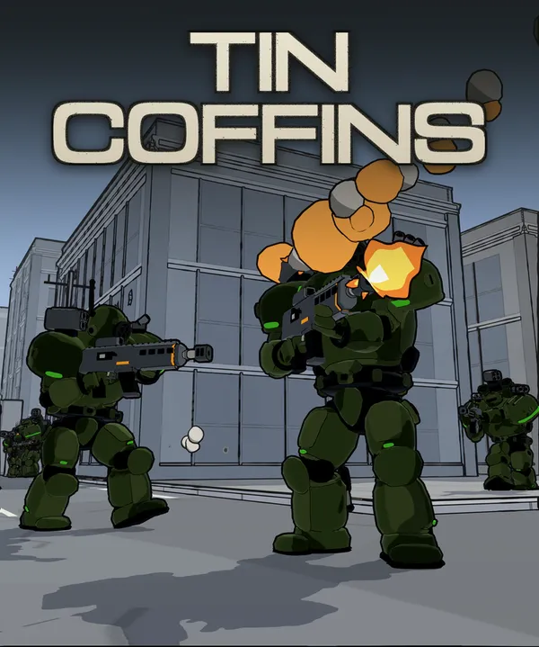

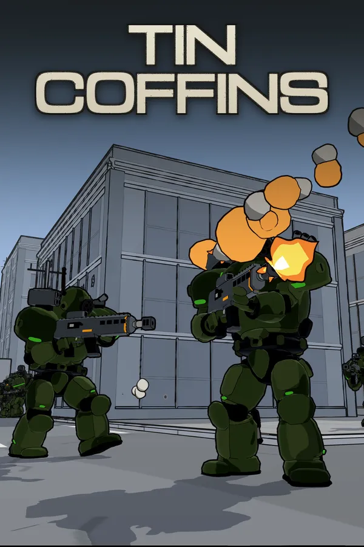

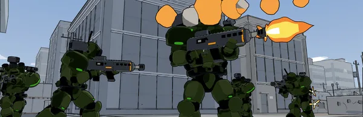
Generative AI, stated plainly
Made with AI tools: the squad’s mechs are modelled by script in Blender from concept designs made with AI image tools, and the HUD’s damage diagram is traced from those designs. The collision shapes of some city buildings started as AI-generated 3D models; the city you see is built from a hand-scripted kit. AI tools helped draft and edit the game’s text, including mission briefings and story transmissions, and translated it into every language the game offers besides English.
Made by people: the enemy mechs, the dropship, the drop drones, the siege tank and the weapons, all modelled by script in Blender with no concept art. Every line of voice in the game was recorded by a person. The music is first-party or from licensed music libraries, and the sound effects come from human-made sound libraries.
Generated while you play: nothing. No generative model runs in the game, and the enemy pilots in the campaign run hand-written behaviour.
Keys, streaming and video
The demo is free on Steam now, co-op included: Tin Coffins on Steam.
Steam keys for the full game go to press, streamers and video creators. Email press@hexmonger.com with a link to your outlet or channel, and say how many pilots if you want to cover co-op.
Streaming and monetization: you are welcome to stream, record and monetize video of Tin Coffins on any platform, and you do not need to ask first. Screenshots and art from this kit may be used in coverage of the game. We’d appreciate a link to the Steam page.
Credits
- Design, code and direction: Nathaniel Voorhies
- Music: original score by Nathaniel Voorhies; soundtrack by Kyuhee Voorhies; additional music from Ovani Sound
- Voices: Vivienne Voorhies (the Mechanic), Maximilian Voorhies (Kestrel), Nathaniel Voorhies (Vanguard, Ember, Wraith)
- Sound effects: Ovani Sound, the Sonniss GDC Game Audio Bundles, and Stormwave Audio
- Animation: Mixamo (Adobe)
- Fonts: Michroma by Vernon Adams (the logotype), Noto Sans CJK JP
- Engine: Godot 4, with Jolt Physics
About Hexmonger
Hexmonger is the independent game studio of Nathaniel Voorhies, who worked on GPU architecture at NVIDIA and on machine-learning accelerators and their compilers at Google before turning to games. It makes small games with deep systems underneath: sand that behaves like sand, cities that generate themselves, and stories that ask you to understand rather than fight.
- Founder
- Nathaniel Voorhies, solo developer (design, programming, writing and music)
- Business
- Sole proprietorship: Nathaniel Voorhies, doing business as Hexmonger
- Based in
- San Mateo County, California, USA
- Games
- Castles in the Sand, a cozy beach-building game with real water, out now on iPhone and iPad
Cozy Necromancy, a cozy mystery RPG with no combat, coming to Steam
Tin Coffins, coming to Steam in December 2026
Goblin Hunt, a pen-and-ink fantasy RPG, in development - Principles
- No accounts. Ads never interrupt play and can always be declined. Every privacy policy is published and versioned in the open.
Tin Coffins started at the end of May 2026 as a mech shooter about being infantry in someone else’s war, against enemies who think. In under five months it grew into a full campaign: a cloned pilot called Talon, three theaters of war across procedurally generated cities, and a death that hands the controls to the next copy. It comes to Steam in December 2026, about six months after its first line of code.
Contact
Talk to the developer
Interviews, keys, questions, or a picture you can’t find here: email Nathaniel directly. There is no form.